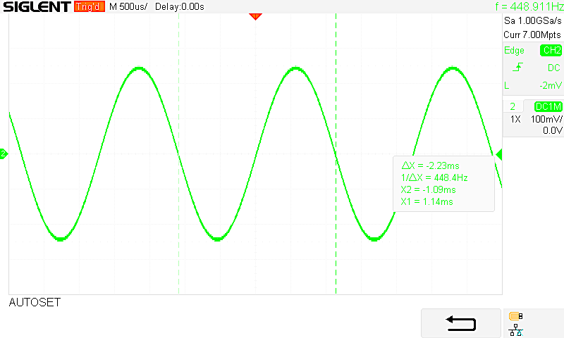

Engineering at the intersection of hardware & software.
I'm Leonard Jedvaj, a Computer Engineering master's student at the University of Rijeka. I build STM32 firmware, real-time digital signal processing systems, and practical AI-powered software — with a growing interest in space and aerospace applications.
Based in Croatia · Interested in embedded systems and software engineering opportunities
PROJECT / 001 HARDWARE PROTOTYPE
STM32 Sound Synthesizer2026 THESIS
AUDIO OUT
6polyphonic voices
12total oscillators
~44kaudio samples/sec
EMBEDDED CARM CORTEX-M4REAL-TIME DSPDMA & PERIPHERALSPYTHON / AI
01 / SELECTED PROJECTS
Things I've built.
A selection of hands-on work across embedded hardware, signal processing and software.
FEATURED / EMBEDDED SYSTEMS

OSCILLOSCOPE / ANALOG OUTPUTREAL MEASUREMENT
UART / MIDIADC + DMAI2S / DACI2C / LCD
Bachelor's thesis · 2026
STM32 Polyphonic Sound Synthesizer
Designed and built a standalone digital synthesizer on an STM32F411 (ARM Cortex-M4) microcontroller, with real-time audio generation and hardware controls.
6-voice polyphony with two wavetable oscillators per voice, generated using direct digital synthesis (DDS).
ADSR envelope with fade-out for retriggering, LFO modulation, and a first-order IIR low-pass filter.
Interrupt-driven MIDI over UART; potentiometer control through ADC/DMA; LCD over I2C.
16-bit audio at approximately 44 kHz streamed to a PCM5102 DAC via I2S with circular DMA and half-buffer processing.
Validated output waveforms and I2S signaling using an oscilloscope.
The thesis reports a measured 448.4 Hz output for a 440 Hz target (approximately 1.9% high). Phase indexing/rounding and I2S timing were examined as possible sources of the deviation. The thesis documents the six-voice version; the public repository may reflect an earlier revision.
SOFTWARE / AI02
DjangoLangGraphOpenAI
AI-Enhanced Polling App
PythonDjangoLangGraphTavily
Polling and results tracking with an AI assistant that uses tool routing, web search and conversational context.
Internship experience spanning AI automation, EV infrastructure planning, game development and web application testing.
VIVADRIVE · POLANDAUG–DEC 2025
AI Automation Engineer Intern
Created fleet and financial lead-analysis workflows with Django, n8n and Selenium, including LLM-assisted document analysis.
Built an EV charging-site discovery and assessment tool using Overpass API and OpenRouteService; evaluated speech-to-text workflows with LangChain and Langfuse.
EXTRAMUS · ITALYJUL–SEP 2024
Game & Web Developer Intern
Developed a visual novel in Godot and performed testing on an HR platform built with Laravel.
03 / TOOLBOX
Technical skills.
Tools and technologies used in coursework, projects and professional work.
University of Rijeka · Faculty of EngineeringComputer Engineering master's studies (in progress). Bachelor's thesis: Sound Synthesizer Implemented on an STM32 Microcontroller (2026).
RIJEKA, CROATIA
04 / CONTACT
Have a project in mind?
I'm interested in embedded engineering, real-time systems and software opportunities — including applications in aerospace.